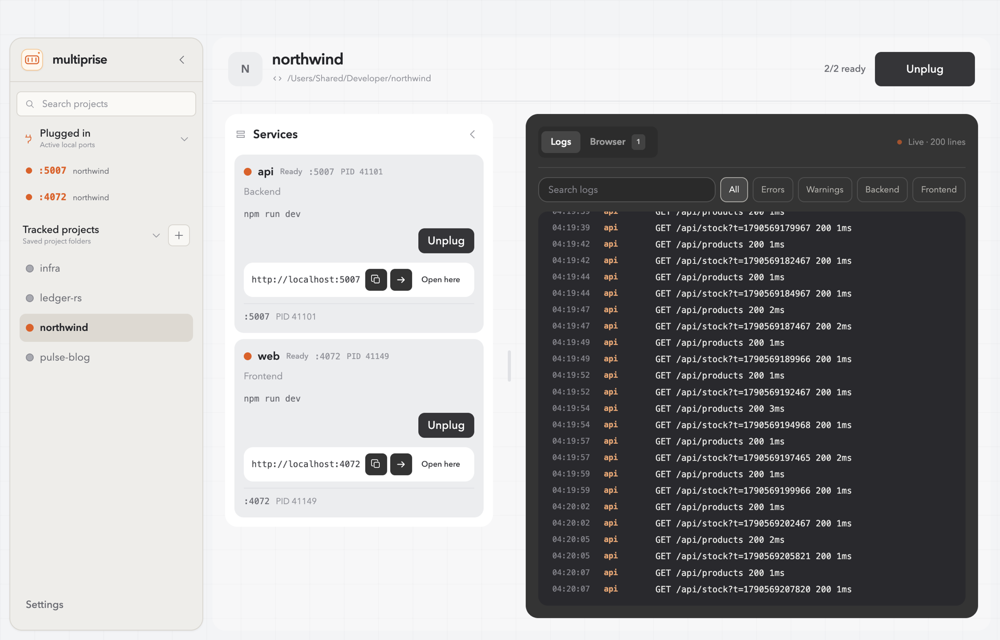
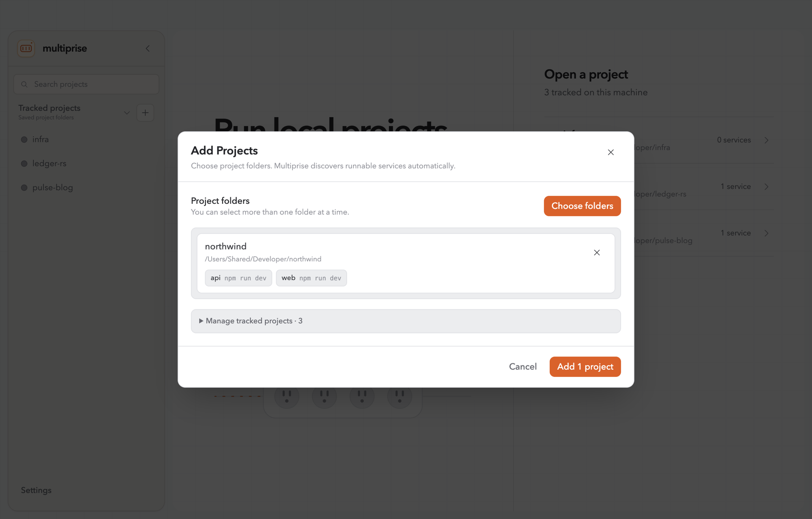
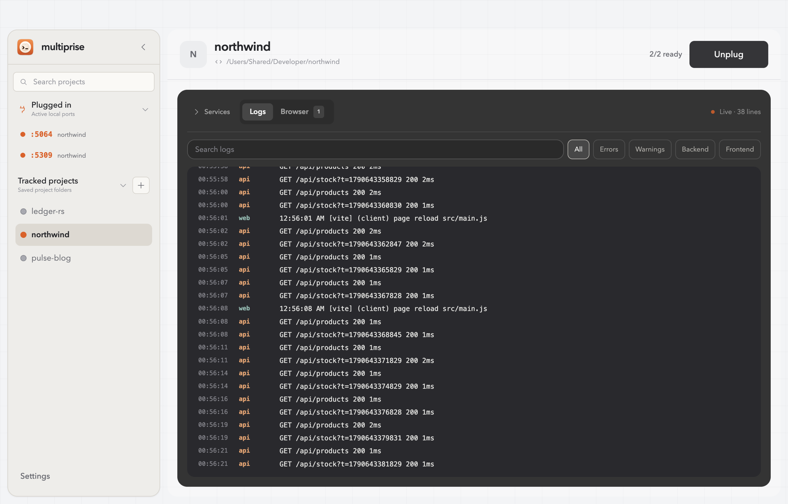
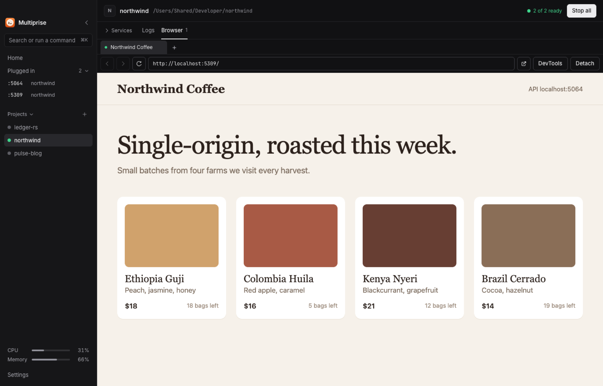

Run every local project from one place.
Multiprise finds the services in your project folders, launches them on free ports, and keeps every log in one stream.

A power strip for your dev environment. Multiprise reads the manifests your projects already have, gives every service a port nobody else is using, and keeps their output in one stream you can search.
Nothing to configure.
It reads package.json, Cargo.toml and Compose files. There's no new config to write.
A free port, every time.
Every service plugs in on a port nobody else is using.
One stream of logs.
Every service's output in one place, searchable and without the escape codes.
Discovery
and launch
Point it at a folder. Multiprise picks each service's dev script, installs missing dependencies, and starts the backend before the frontend.

Works with npm pnpm Yarn Bun Cargo Docker Compose and keeps any command you edit.
Ports
and wiring
No more port roulette. Each service gets a port nobody else is using, and the frontend is told where its API lives.
Logs
and preview
See what every service is doing. Search and filter all of their output in one stream, and open any frontend in a tab right beside it.


Command line
and MCP
Your agents reuse what's already running. The multiprise command and its MCP server let coding agents start services, read their logs and get their URLs instead of starting duplicates on random ports. Coming in the next release.
Built to stay
on your Mac
Your projects never leave it. Multiprise is a local tool with no account, no cloud and nothing to send.
Local only. It listens on 127.0.0.1, never on your network.
No account. Download it and open it.
No telemetry. It never phones home.
Sandboxed tabs. Previews can't reach the app's controls.
Install
in a minute
Not notarized yet, so one extra click. macOS blocks apps from new developers the first time you open them.
Prefer Terminal? This removes the download flag instead.
xattr -dr com.apple.quarantine /Applications/Multiprise.app